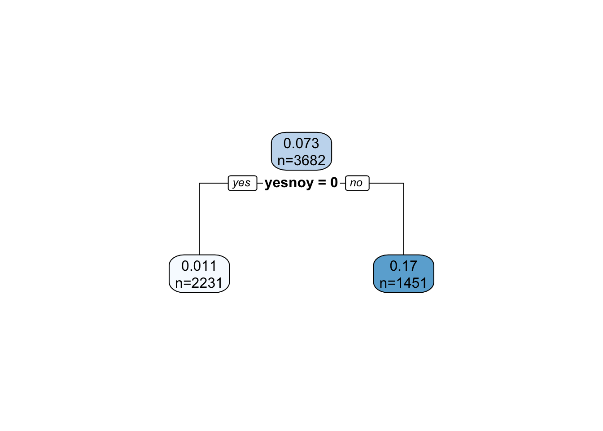

# Sets the number of significant figures to twooptions(digits =3)# Checking and installing pacman if (!require(pacman))install.packages("pacman")
Loading required package: pacman
# Downloads and load required packagespacman::p_load(tidyverse, rpart, rpart.plot, caret, lattice, FSelector, sampling, pROC, mlbench)# Installed FSelector using the link provided in slack
Introduction
Classification is a machine learning task with the goal to learn a predictive function of the form
y=f(x)
where is x called the attribute set and y, the class label. The attribute set consists of feature which describe an object. These features can be measured using any scale (i.e., nominal, interval, …). The class label is a nominal attribute. It it is a binary attribute, then the problem is called a binary classification problem.
Classification learns the classification model from training data where both the features and the correct class label are available. This is why it is called a supervised learning problem.
A related supervised learning problem is regression, where is a number instead of a label.
This chapter will introduce decision trees, model evaluation and comparison, feature selection, and then explore methods to handle the class imbalance problem.
Load data and view
Examine columns and data types
Define box plots
Describe meta data
The Dataset
Using the spam email dataset from tidyurl- The dataset classifies 4601 e-mails as spam or non-spam, with additional variables indicating the frequency of certain words and characters in the e-mail.
The features in the table are as
crl.tot - Total length of uninterrupted sequences of capitals
dollar - Occurrences of the dollar sign, as percent of total number of characters
bang - Occurrences of ‘!’, as percent of total number of characters
money - Occurrences of ‘money’, as percent of total number of characters
n000 - Occurrences of the string ‘000’, as percent of total number of words
make - Occurrences of ‘make’, as a percent of total number of words
yesno - Outcome variable, a factor with levels ‘n’ not spam, ‘y’ spam
# Loading the datasetspam <-read.csv("/Users/shashwatsingh/Documents/GitHub/hw-03-shashwatsinghds/data/spam.csv") head(spam)
crl.tot dollar bang money n000 make yesno
1 278 0.000 0.778 0.00 0.00 0.00 y
2 1028 0.180 0.372 0.43 0.43 0.21 y
3 2259 0.184 0.276 0.06 1.16 0.06 y
4 191 0.000 0.137 0.00 0.00 0.00 y
5 191 0.000 0.135 0.00 0.00 0.00 y
6 54 0.000 0.000 0.00 0.00 0.00 y
#Properties of the dataas_tibble(spam, rownames ="yesno")
# A tibble: 4,601 × 8
yesno crl.tot dollar bang money n000 make yesno
<chr> <int> <dbl> <dbl> <dbl> <dbl> <dbl> <chr>
1 1 278 0 0.778 0 0 0 y
2 2 1028 0.18 0.372 0.43 0.43 0.21 y
3 3 2259 0.184 0.276 0.06 1.16 0.06 y
4 4 191 0 0.137 0 0 0 y
5 5 191 0 0.135 0 0 0 y
6 6 54 0 0 0 0 0 y
7 7 112 0.054 0.164 0 0 0 y
8 8 49 0 0 0 0 0 y
9 9 1257 0.203 0.181 0.15 0 0.15 y
10 10 749 0.081 0.244 0 0.19 0.06 y
# ℹ 4,591 more rows
Warning: There was 1 warning in `mutate()`.
ℹ In argument: `across(where(is.logical), factor, levels = c(y, n))`.
Caused by warning:
! The `...` argument of `across()` is deprecated as of dplyr 1.1.0.
Supply arguments directly to `.fns` through an anonymous function instead.
# Previously
across(a:b, mean, na.rm = TRUE)
# Now
across(a:b, \(x) mean(x, na.rm = TRUE))
summary(spam)
crl.tot dollar bang money n000
Min. : 1 Min. :0.00 Min. : 0.0 Min. : 0.00 Min. :0.00
1st Qu.: 35 1st Qu.:0.00 1st Qu.: 0.0 1st Qu.: 0.00 1st Qu.:0.00
Median : 95 Median :0.00 Median : 0.0 Median : 0.00 Median :0.00
Mean : 283 Mean :0.08 Mean : 0.3 Mean : 0.09 Mean :0.10
3rd Qu.: 266 3rd Qu.:0.05 3rd Qu.: 0.3 3rd Qu.: 0.00 3rd Qu.:0.00
Max. :15841 Max. :6.00 Max. :32.5 Max. :12.50 Max. :5.45
make yesno
Min. :0.00 n:2788
1st Qu.:0.00 y:1813
Median :0.00
Mean :0.10
3rd Qu.:0.00
Max. :4.54
Decision Trees
Recursive Partitioning (similar to CART) uses the Gini index to make splitting decisions and early stopping (pre-pruning).
library(rpart)
Create Tree With Default Settings (uses pre-pruning)
tree_default <- spam |>rpart(yesno ~ ., data = _)tree_default
n= 4601
node), split, n, loss, yval, (yprob)
* denotes terminal node
1) root 4601 1810 n (0.606 0.394)
2) dollar< 0.0555 3471 816 n (0.765 0.235)
4) bang< 0.0915 2420 246 n (0.898 0.102) *
5) bang>=0.0915 1051 481 y (0.458 0.542)
10) crl.tot< 85.5 535 175 n (0.673 0.327)
20) bang< 0.774 418 106 n (0.746 0.254) *
21) bang>=0.774 117 48 y (0.410 0.590)
42) crl.tot< 17 43 12 n (0.721 0.279) *
43) crl.tot>=17 74 17 y (0.230 0.770) *
11) crl.tot>=85.5 516 121 y (0.234 0.766) *
3) dollar>=0.0555 1130 133 y (0.118 0.882) *
Notes:
|> supplies the data for rpart. Since data is not the first argument of rpart, the syntax data = _ is used to specify where the data in spam goes. The call is equivalent to tree_default <- rpart(yesno ~ ., data = spam).
The formula models the type variable by all other features is represented by ..
the class variable needs a factor (nominal) or rpart will create a regression tree instead of a decision tree. Use as.factor() if necessary
Plotting
library(rpart.plot)rpart.plot(tree_default, extra =2)
Create a Full Tree
To create a full tree, we set the complexity parameter cp to 0 (split even if it does not improve the tree) and we set the minimum number of observations in a node needed to split to the smallest value of 2 (see: ?rpart.control). Note: full trees overfit the training data!
tree_full <- spam |>rpart(yesno ~ . , data = _, control =rpart.control(minsplit =2, cp =0))rpart.plot(tree_full, extra =2, roundint=FALSE,box.palette =list( "Bu","Or") )
Warning: labs do not fit even at cex 0.15, there may be some overplotting
tree_full
n= 4601
node), split, n, loss, yval, (yprob)
* denotes terminal node
1.00e+00) root 4601 1810 n (0.60596 0.39404)
2.00e+00) dollar< 0.0555 3471 816 n (0.76491 0.23509)
4.00e+00) bang< 0.0915 2420 246 n (0.89835 0.10165)
8.00e+00) n000< 0.26 2399 232 n (0.90329 0.09671)
1.60e+01) money< 0.035 2351 213 n (0.90940 0.09060)
3.20e+01) crl.tot< 29.5 809 31 n (0.96168 0.03832) *
3.30e+01) crl.tot>=29.5 1542 182 n (0.88197 0.11803)
6.60e+01) crl.tot< 3.24e+03 1534 178 n (0.88396 0.11604)
1.32e+02) crl.tot>=506 173 6 n (0.96532 0.03468)
2.64e+02) bang< 0.0285 146 2 n (0.98630 0.01370)
5.28e+02) dollar< 0.05 142 1 n (0.99296 0.00704)
1.06e+03) crl.tot< 1.32e+03 109 0 n (1.00000 0.00000) *
1.06e+03) crl.tot>=1.32e+03 33 1 n (0.96970 0.03030)
2.11e+03) crl.tot>=1.32e+03 32 0 n (1.00000 0.00000) *
2.12e+03) crl.tot< 1.32e+03 1 0 y (0.00000 1.00000) *
5.29e+02) dollar>=0.05 4 1 n (0.75000 0.25000) *
2.65e+02) bang>=0.0285 27 4 n (0.85185 0.14815)
5.30e+02) bang>=0.0345 20 1 n (0.95000 0.05000)
1.06e+03) crl.tot< 980 14 0 n (1.00000 0.00000) *
1.06e+03) crl.tot>=980 6 1 n (0.83333 0.16667)
2.12e+03) crl.tot>=1.01e+03 5 0 n (1.00000 0.00000) *
2.12e+03) crl.tot< 1.01e+03 1 0 y (0.00000 1.00000) *
5.31e+02) bang< 0.0345 7 3 n (0.57143 0.42857)
1.06e+03) make>=0.07 3 0 n (1.00000 0.00000) *
1.06e+03) make< 0.07 4 1 y (0.25000 0.75000)
2.13e+03) crl.tot>=2.76e+03 1 0 n (1.00000 0.00000) *
2.13e+03) crl.tot< 2.76e+03 3 0 y (0.00000 1.00000) *
1.33e+02) crl.tot< 506 1361 172 n (0.87362 0.12638)
2.66e+02) dollar< 0.039 1331 161 n (0.87904 0.12096)
5.32e+02) crl.tot< 502 1325 158 n (0.88075 0.11925)
1.06e+03) crl.tot< 98.5 698 68 n (0.90258 0.09742)
2.13e+03) make< 2.21 696 67 n (0.90374 0.09626)
4.26e+03) make>=0.58 44 0 n (1.00000 0.00000) *
4.26e+03) make< 0.58 652 67 n (0.89724 0.10276)
8.51e+03) make< 0.5 646 65 n (0.89938 0.10062)
1.70e+04) crl.tot>=88.5 66 2 n (0.96970 0.03030) *
1.70e+04) crl.tot< 88.5 580 63 n (0.89138 0.10862)
3.41e+04) crl.tot>=36.5 479 48 n (0.89979 0.10021)
6.81e+04) crl.tot< 48.5 160 11 n (0.93125 0.06875) *
6.81e+04) crl.tot>=48.5 319 37 n (0.88401 0.11599)
1.36e+05) bang< 0.058 304 33 n (0.89145 0.10855)
2.72e+05) crl.tot>=51.5 273 27 n (0.90110 0.09890)
5.45e+05) crl.tot< 60.5 74 4 n (0.94595 0.05405) *
5.45e+05) crl.tot>=60.5 199 23 n (0.88442 0.11558)
1.09e+06) crl.tot>=62.5 180 18 n (0.90000 0.10000)
2.18e+06) crl.tot< 65.5 24 0 n (1.00000 0.00000) *
2.18e+06) crl.tot>=65.5 156 18 n (0.88462 0.11538)
4.36e+06) crl.tot>=66.5 152 16 n (0.89474 0.10526)
8.72e+06) make< 0.32 144 14 n (0.90278 0.09722) *
8.72e+06) make>=0.32 8 2 n (0.75000 0.25000)
1.74e+07) crl.tot>=70 6 0 n (1.00000 0.00000) *
1.74e+07) crl.tot< 70 2 0 y (0.00000 1.00000) *
4.36e+06) crl.tot< 66.5 4 2 n (0.50000 0.50000) *
1.09e+06) crl.tot< 62.5 19 5 n (0.73684 0.26316) *
2.72e+05) crl.tot< 51.5 31 6 n (0.80645 0.19355) *
1.36e+05) bang>=0.058 15 4 n (0.73333 0.26667)
2.72e+05) bang>=0.0805 6 0 n (1.00000 0.00000) *
2.72e+05) bang< 0.0805 9 4 n (0.55556 0.44444)
5.45e+05) crl.tot>=68 7 2 n (0.71429 0.28571)
1.09e+06) bang< 0.0765 4 0 n (1.00000 0.00000) *
1.09e+06) bang>=0.0765 3 1 y (0.33333 0.66667)
2.18e+06) crl.tot>=76 2 1 n (0.50000 0.50000)
4.36e+06) crl.tot< 80 1 0 n (1.00000 0.00000) *
4.36e+06) crl.tot>=80 1 0 y (0.00000 1.00000) *
2.18e+06) crl.tot< 76 1 0 y (0.00000 1.00000) *
5.45e+05) crl.tot< 68 2 0 y (0.00000 1.00000) *
3.41e+04) crl.tot< 36.5 101 15 n (0.85149 0.14851) *
8.52e+03) make>=0.5 6 2 n (0.66667 0.33333)
1.70e+04) crl.tot< 78 4 0 n (1.00000 0.00000) *
1.70e+04) crl.tot>=78 2 0 y (0.00000 1.00000) *
2.13e+03) make>=2.21 2 1 n (0.50000 0.50000)
4.26e+03) crl.tot< 40 1 0 n (1.00000 0.00000) *
4.26e+03) crl.tot>=40 1 0 y (0.00000 1.00000) *
1.06e+03) crl.tot>=98.5 627 90 n (0.85646 0.14354)
2.13e+03) bang< 0.0875 624 88 n (0.85897 0.14103)
4.26e+03) crl.tot>=186 272 29 n (0.89338 0.10662)
8.52e+03) crl.tot< 208 50 0 n (1.00000 0.00000) *
8.52e+03) crl.tot>=208 222 29 n (0.86937 0.13063)
1.70e+04) crl.tot>=208 219 27 n (0.87671 0.12329)
3.41e+04) n000< 0.135 215 25 n (0.88372 0.11628)
6.82e+04) make>=0.035 48 2 n (0.95833 0.04167)
1.36e+05) make< 0.405 43 1 n (0.97674 0.02326)
2.73e+05) crl.tot< 411 31 0 n (1.00000 0.00000) *
2.73e+05) crl.tot>=411 12 1 n (0.91667 0.08333)
5.45e+05) crl.tot>=416 11 0 n (1.00000 0.00000) *
5.45e+05) crl.tot< 416 1 0 y (0.00000 1.00000) *
1.36e+05) make>=0.405 5 1 n (0.80000 0.20000)
2.73e+05) make>=0.42 4 0 n (1.00000 0.00000) *
2.73e+05) make< 0.42 1 0 y (0.00000 1.00000) *
6.82e+04) make< 0.035 167 23 n (0.86228 0.13772)
1.36e+05) crl.tot< 480 160 20 n (0.87500 0.12500)
2.73e+05) dollar< 0.0315 158 19 n (0.87975 0.12025)
5.45e+05) bang>=0.0375 28 1 n (0.96429 0.03571)
1.09e+06) crl.tot< 427 27 0 n (1.00000 0.00000) *
1.09e+06) crl.tot>=427 1 0 y (0.00000 1.00000) *
5.45e+05) bang< 0.0375 130 18 n (0.86154 0.13846)
1.09e+06) bang< 0.032 126 14 n (0.88889 0.11111)
2.18e+06) crl.tot>=250 97 8 n (0.91753 0.08247)
4.36e+06) crl.tot< 358 51 2 n (0.96078 0.03922)
8.73e+06) crl.tot>=292 30 0 n (1.00000 0.00000) *
8.73e+06) crl.tot< 292 21 2 n (0.90476 0.09524)
1.75e+07) crl.tot< 291 20 1 n (0.95000 0.05000)
3.49e+07) crl.tot>=266 11 0 n (1.00000 0.00000) *
3.49e+07) crl.tot< 266 9 1 n (0.88889 0.11111)
6.98e+07) crl.tot< 264 8 0 n (1.00000 0.00000) *
6.98e+07) crl.tot>=264 1 0 y (0.00000 1.00000) *
1.75e+07) crl.tot>=291 1 0 y (0.00000 1.00000) *
4.36e+06) crl.tot>=358 46 6 n (0.86957 0.13043)
8.73e+06) crl.tot>=366 43 4 n (0.90698 0.09302)
1.75e+07) crl.tot< 378 13 0 n (1.00000 0.00000) *
1.75e+07) crl.tot>=378 30 4 n (0.86667 0.13333)
3.49e+07) crl.tot>=380 29 3 n (0.89655 0.10345)
6.98e+07) crl.tot< 399 9 0 n (1.00000 0.00000) *
6.98e+07) crl.tot>=399 20 3 n (0.85000 0.15000)
1.40e+08) crl.tot>=406 19 2 n (0.89474 0.10526)
2.79e+08) crl.tot< 424 5 0 n (1.00000 0.00000) *
2.79e+08) crl.tot>=424 14 2 n (0.85714 0.14286)
5.58e+08) crl.tot>=426 13 1 n (0.92308 0.07692) *
5.58e+08) crl.tot< 426 1 0 y (0.00000 1.00000) *
1.40e+08) crl.tot< 406 1 0 y (0.00000 1.00000) *
3.49e+07) crl.tot< 380 1 0 y (0.00000 1.00000) *
8.73e+06) crl.tot< 366 3 1 y (0.33333 0.66667)
1.75e+07) dollar>=0.012 1 0 n (1.00000 0.00000) *
1.75e+07) dollar< 0.012 2 0 y (0.00000 1.00000) *
2.18e+06) crl.tot< 250 29 6 n (0.79310 0.20690)
4.36e+06) crl.tot< 240 25 3 n (0.88000 0.12000)
8.73e+06) crl.tot>=235 9 0 n (1.00000 0.00000) *
8.73e+06) crl.tot< 235 16 3 n (0.81250 0.18750)
1.75e+07) crl.tot< 233 15 2 n (0.86667 0.13333)
3.49e+07) crl.tot< 228 12 1 n (0.91667 0.08333) *
3.49e+07) crl.tot>=228 3 1 n (0.66667 0.33333)
6.98e+07) crl.tot>=229 2 0 n (1.00000 0.00000) *
6.98e+07) crl.tot< 229 1 0 y (0.00000 1.00000) *
1.75e+07) crl.tot>=233 1 0 y (0.00000 1.00000) *
4.36e+06) crl.tot>=240 4 1 y (0.25000 0.75000)
8.73e+06) crl.tot>=244 2 1 n (0.50000 0.50000)
1.75e+07) crl.tot< 248 1 0 n (1.00000 0.00000) *
1.75e+07) crl.tot>=248 1 0 y (0.00000 1.00000) *
8.73e+06) crl.tot< 244 2 0 y (0.00000 1.00000) *
1.09e+06) bang>=0.032 4 0 y (0.00000 1.00000) *
2.73e+05) dollar>=0.0315 2 1 n (0.50000 0.50000)
5.45e+05) crl.tot>=274 1 0 n (1.00000 0.00000) *
5.45e+05) crl.tot< 274 1 0 y (0.00000 1.00000) *
1.36e+05) crl.tot>=480 7 3 n (0.57143 0.42857)
2.73e+05) crl.tot>=494 3 0 n (1.00000 0.00000) *
2.73e+05) crl.tot< 494 4 1 y (0.25000 0.75000)
5.45e+05) crl.tot>=484 2 1 n (0.50000 0.50000)
1.09e+06) crl.tot< 488 1 0 n (1.00000 0.00000) *
1.09e+06) crl.tot>=488 1 0 y (0.00000 1.00000) *
5.45e+05) crl.tot< 484 2 0 y (0.00000 1.00000) *
3.41e+04) n000>=0.135 4 2 n (0.50000 0.50000)
6.82e+04) dollar< 0.0195 2 0 n (1.00000 0.00000) *
6.82e+04) dollar>=0.0195 2 0 y (0.00000 1.00000) *
1.70e+04) crl.tot< 208 3 1 y (0.33333 0.66667)
3.41e+04) bang>=0.0595 1 0 n (1.00000 0.00000) *
3.41e+04) bang< 0.0595 2 0 y (0.00000 1.00000) *
4.26e+03) crl.tot< 186 352 59 n (0.83239 0.16761)
8.52e+03) crl.tot< 186 348 57 n (0.83621 0.16379)
1.70e+04) make>=0.315 29 1 n (0.96552 0.03448)
3.41e+04) bang< 0.045 21 0 n (1.00000 0.00000) *
3.41e+04) bang>=0.045 8 1 n (0.87500 0.12500)
6.82e+04) bang>=0.047 7 0 n (1.00000 0.00000) *
6.82e+04) bang< 0.047 1 0 y (0.00000 1.00000) *
1.70e+04) make< 0.315 319 56 n (0.82445 0.17555)
3.41e+04) make< 0.305 318 55 n (0.82704 0.17296)
6.82e+04) dollar< 0.0095 313 53 n (0.83067 0.16933)
1.36e+05) make< 0.265 308 51 n (0.83442 0.16558)
2.73e+05) make>=0.06 13 0 n (1.00000 0.00000) *
2.73e+05) make< 0.06 295 51 n (0.82712 0.17288)
5.45e+05) crl.tot>=172 24 2 n (0.91667 0.08333) *
5.45e+05) crl.tot< 172 271 49 n (0.81919 0.18081)
1.09e+06) crl.tot< 170 266 47 n (0.82331 0.17669)
2.18e+06) crl.tot>=106 228 38 n (0.83333 0.16667)
4.36e+06) bang>=0.0535 11 0 n (1.00000 0.00000) *
4.36e+06) bang< 0.0535 217 38 n (0.82488 0.17512)
8.73e+06) bang< 0.0495 215 36 n (0.83256 0.16744)
1.75e+07) crl.tot>=166 8 0 n (1.00000 0.00000) *
1.75e+07) crl.tot< 166 207 36 n (0.82609 0.17391)
3.49e+07) bang< 0.043 202 34 n (0.83168 0.16832)
6.98e+07) crl.tot< 165 200 33 n (0.83500 0.16500)
1.40e+08) crl.tot>=162 5 0 n (1.00000 0.00000) *
1.40e+08) crl.tot< 162 195 33 n (0.83077 0.16923)
2.79e+08) crl.tot< 162 191 31 n (0.83770 0.16230)
5.59e+08) crl.tot>=146 40 4 n (0.90000 0.10000) *
5.59e+08) crl.tot< 146 151 27 n (0.82119 0.17881)
1.12e+09) crl.tot< 144 144 23 n (0.84028 0.15972) *
1.12e+09) crl.tot>=144 7 3 y (0.42857 0.57143) *
2.79e+08) crl.tot>=162 4 2 n (0.50000 0.50000) *
6.98e+07) crl.tot>=165 2 1 n (0.50000 0.50000) *
3.49e+07) bang>=0.043 5 2 n (0.60000 0.40000)
6.98e+07) bang>=0.0465 3 0 n (1.00000 0.00000) *
6.98e+07) bang< 0.0465 2 0 y (0.00000 1.00000) *
8.73e+06) bang>=0.0495 2 0 y (0.00000 1.00000) *
2.18e+06) crl.tot< 106 38 9 n (0.76316 0.23684)
4.36e+06) crl.tot< 106 30 5 n (0.83333 0.16667)
8.73e+06) bang< 0.0755 29 4 n (0.86207 0.13793)
1.75e+07) crl.tot>=102 14 1 n (0.92857 0.07143) *
1.75e+07) crl.tot< 102 15 3 n (0.80000 0.20000)
3.49e+07) crl.tot< 102 14 2 n (0.85714 0.14286) *
3.49e+07) crl.tot>=102 1 0 y (0.00000 1.00000) *
8.73e+06) bang>=0.0755 1 0 y (0.00000 1.00000) *
4.36e+06) crl.tot>=106 8 4 n (0.50000 0.50000)
8.73e+06) bang>=0.0195 2 0 n (1.00000 0.00000) *
8.73e+06) bang< 0.0195 6 2 y (0.33333 0.66667) *
1.09e+06) crl.tot>=170 5 2 n (0.60000 0.40000)
2.18e+06) bang>=0.0775 1 0 n (1.00000 0.00000) *
2.18e+06) bang< 0.0775 4 2 n (0.50000 0.50000)
4.36e+06) bang< 0.0385 3 1 n (0.66667 0.33333) *
4.36e+06) bang>=0.0385 1 0 y (0.00000 1.00000) *
1.36e+05) make>=0.265 5 2 n (0.60000 0.40000)
2.73e+05) make>=0.295 2 0 n (1.00000 0.00000) *
2.73e+05) make< 0.295 3 1 y (0.33333 0.66667)
5.45e+05) bang>=0.04 1 0 n (1.00000 0.00000) *
5.45e+05) bang< 0.04 2 0 y (0.00000 1.00000) *
6.82e+04) dollar>=0.0095 5 2 n (0.60000 0.40000)
1.36e+05) crl.tot< 170 3 0 n (1.00000 0.00000) *
1.36e+05) crl.tot>=170 2 0 y (0.00000 1.00000) *
3.41e+04) make>=0.305 1 0 y (0.00000 1.00000) *
8.52e+03) crl.tot>=186 4 2 n (0.50000 0.50000)
1.70e+04) make< 0.355 3 1 n (0.66667 0.33333) *
1.70e+04) make>=0.355 1 0 y (0.00000 1.00000) *
2.13e+03) bang>=0.0875 3 1 y (0.33333 0.66667)
4.26e+03) crl.tot>=176 1 0 n (1.00000 0.00000) *
4.26e+03) crl.tot< 176 2 0 y (0.00000 1.00000) *
5.33e+02) crl.tot>=502 6 3 n (0.50000 0.50000)
1.07e+03) dollar>=0.0155 2 0 n (1.00000 0.00000) *
1.07e+03) dollar< 0.0155 4 1 y (0.25000 0.75000)
2.13e+03) crl.tot>=506 2 1 n (0.50000 0.50000)
4.27e+03) bang< 0.0165 1 0 n (1.00000 0.00000) *
4.27e+03) bang>=0.0165 1 0 y (0.00000 1.00000) *
2.14e+03) crl.tot< 506 2 0 y (0.00000 1.00000) *
2.67e+02) dollar>=0.039 30 11 n (0.63333 0.36667)
5.34e+02) make< 0.11 25 6 n (0.76000 0.24000)
1.07e+03) crl.tot< 478 23 4 n (0.82609 0.17391)
2.14e+03) n000< 0.18 22 3 n (0.86364 0.13636)
4.27e+03) dollar>=0.049 7 0 n (1.00000 0.00000) *
4.27e+03) dollar< 0.049 15 3 n (0.80000 0.20000)
8.55e+03) crl.tot>=166 9 1 n (0.88889 0.11111)
1.71e+04) crl.tot< 410 6 0 n (1.00000 0.00000) *
1.71e+04) crl.tot>=410 3 1 n (0.66667 0.33333)
3.42e+04) crl.tot>=420 2 0 n (1.00000 0.00000) *
3.42e+04) crl.tot< 420 1 0 y (0.00000 1.00000) *
8.55e+03) crl.tot< 166 6 2 n (0.66667 0.33333)
1.71e+04) crl.tot< 160 5 1 n (0.80000 0.20000) *
1.71e+04) crl.tot>=160 1 0 y (0.00000 1.00000) *
2.14e+03) n000>=0.18 1 0 y (0.00000 1.00000) *
1.07e+03) crl.tot>=478 2 0 y (0.00000 1.00000) *
5.35e+02) make>=0.11 5 0 y (0.00000 1.00000) *
6.70e+01) crl.tot>=3.24e+03 8 4 n (0.50000 0.50000)
1.34e+02) crl.tot>=3.33e+03 6 2 n (0.66667 0.33333)
2.68e+02) make< 0.07 4 0 n (1.00000 0.00000) *
2.69e+02) make>=0.07 2 0 y (0.00000 1.00000) *
1.35e+02) crl.tot< 3.33e+03 2 0 y (0.00000 1.00000) *
1.70e+01) money>=0.035 48 19 n (0.60417 0.39583)
3.40e+01) bang< 0.08 45 16 n (0.64444 0.35556)
6.80e+01) crl.tot< 1.06e+03 40 12 n (0.70000 0.30000)
1.36e+02) money< 1.33 26 4 n (0.84615 0.15385)
2.72e+02) bang< 0.0585 19 1 n (0.94737 0.05263)
5.44e+02) money>=0.075 16 0 n (1.00000 0.00000) *
5.45e+02) money< 0.075 3 1 n (0.66667 0.33333)
1.09e+03) crl.tot>=420 2 0 n (1.00000 0.00000) *
1.09e+03) crl.tot< 420 1 0 y (0.00000 1.00000) *
2.73e+02) bang>=0.0585 7 3 n (0.57143 0.42857)
5.46e+02) crl.tot>=373 3 0 n (1.00000 0.00000) *
5.47e+02) crl.tot< 373 4 1 y (0.25000 0.75000)
1.09e+03) bang>=0.072 1 0 n (1.00000 0.00000) *
1.10e+03) bang< 0.072 3 0 y (0.00000 1.00000) *
1.37e+02) money>=1.33 14 6 y (0.42857 0.57143)
2.74e+02) crl.tot< 54.5 8 2 n (0.75000 0.25000)
5.48e+02) crl.tot>=4.5 7 1 n (0.85714 0.14286)
1.10e+03) money>=1.54 6 0 n (1.00000 0.00000) *
1.10e+03) money< 1.54 1 0 y (0.00000 1.00000) *
5.49e+02) crl.tot< 4.5 1 0 y (0.00000 1.00000) *
2.75e+02) crl.tot>=54.5 6 0 y (0.00000 1.00000) *
6.90e+01) crl.tot>=1.06e+03 5 1 y (0.20000 0.80000)
1.38e+02) make>=0.08 1 0 n (1.00000 0.00000) *
1.39e+02) make< 0.08 4 0 y (0.00000 1.00000) *
3.50e+01) bang>=0.08 3 0 y (0.00000 1.00000) *
9.00e+00) n000>=0.26 21 7 y (0.33333 0.66667)
1.80e+01) n000>=0.665 4 0 n (1.00000 0.00000) *
1.90e+01) n000< 0.665 17 3 y (0.17647 0.82353)
3.80e+01) dollar>=0.024 3 1 n (0.66667 0.33333)
7.60e+01) crl.tot>=293 2 0 n (1.00000 0.00000) *
7.70e+01) crl.tot< 293 1 0 y (0.00000 1.00000) *
3.90e+01) dollar< 0.024 14 1 y (0.07143 0.92857)
7.80e+01) make>=0.345 1 0 n (1.00000 0.00000) *
7.90e+01) make< 0.345 13 0 y (0.00000 1.00000) *
5.00e+00) bang>=0.0915 1051 481 y (0.45766 0.54234)
1.00e+01) crl.tot< 85.5 535 175 n (0.67290 0.32710)
2.00e+01) bang< 0.774 418 106 n (0.74641 0.25359)
4.00e+01) money< 0.835 408 97 n (0.76225 0.23775)
8.00e+01) crl.tot< 51.5 255 40 n (0.84314 0.15686)
1.60e+02) n000< 0.64 254 39 n (0.84646 0.15354)
3.20e+02) crl.tot< 12.5 13 0 n (1.00000 0.00000) *
3.21e+02) crl.tot>=12.5 241 39 n (0.83817 0.16183)
6.42e+02) bang< 0.191 64 6 n (0.90625 0.09375)
1.28e+03) bang>=0.114 52 3 n (0.94231 0.05769)
2.57e+03) bang>=0.165 22 0 n (1.00000 0.00000) *
2.57e+03) bang< 0.165 30 3 n (0.90000 0.10000)
5.14e+03) bang< 0.145 17 0 n (1.00000 0.00000) *
5.14e+03) bang>=0.145 13 3 n (0.76923 0.23077)
1.03e+04) bang>=0.148 10 1 n (0.90000 0.10000)
2.06e+04) bang< 0.163 8 0 n (1.00000 0.00000) *
2.06e+04) bang>=0.163 2 1 n (0.50000 0.50000)
4.11e+04) crl.tot< 37 1 0 n (1.00000 0.00000) *
4.11e+04) crl.tot>=37 1 0 y (0.00000 1.00000) *
1.03e+04) bang< 0.148 3 1 y (0.33333 0.66667)
2.06e+04) crl.tot>=22.5 2 1 n (0.50000 0.50000)
4.11e+04) crl.tot< 29.5 1 0 n (1.00000 0.00000) *
4.11e+04) crl.tot>=29.5 1 0 y (0.00000 1.00000) *
2.06e+04) crl.tot< 22.5 1 0 y (0.00000 1.00000) *
1.28e+03) bang< 0.114 12 3 n (0.75000 0.25000)
2.57e+03) bang< 0.108 7 0 n (1.00000 0.00000) *
2.57e+03) bang>=0.108 5 2 y (0.40000 0.60000)
5.14e+03) crl.tot>=29 4 2 n (0.50000 0.50000)
1.03e+04) crl.tot< 47.5 3 1 n (0.66667 0.33333)
2.06e+04) crl.tot>=38.5 1 0 n (1.00000 0.00000) *
2.06e+04) crl.tot< 38.5 2 1 n (0.50000 0.50000)
4.11e+04) make>=0.28 1 0 n (1.00000 0.00000) *
4.11e+04) make< 0.28 1 0 y (0.00000 1.00000) *
1.03e+04) crl.tot>=47.5 1 0 y (0.00000 1.00000) *
5.14e+03) crl.tot< 29 1 0 y (0.00000 1.00000) *
6.43e+02) bang>=0.191 177 33 n (0.81356 0.18644)
1.29e+03) bang>=0.204 169 29 n (0.82840 0.17160)
2.57e+03) bang< 0.263 31 2 n (0.93548 0.06452)
5.14e+03) crl.tot>=26 26 1 n (0.96154 0.03846)
1.03e+04) crl.tot< 47.5 21 0 n (1.00000 0.00000) *
1.03e+04) crl.tot>=47.5 5 1 n (0.80000 0.20000)
2.06e+04) crl.tot>=48.5 4 0 n (1.00000 0.00000) *
2.06e+04) crl.tot< 48.5 1 0 y (0.00000 1.00000) *
5.14e+03) crl.tot< 26 5 1 n (0.80000 0.20000)
1.03e+04) crl.tot< 24.5 4 0 n (1.00000 0.00000) *
1.03e+04) crl.tot>=24.5 1 0 y (0.00000 1.00000) *
2.57e+03) bang>=0.263 138 27 n (0.80435 0.19565)
5.15e+03) make< 1.74 137 26 n (0.81022 0.18978)
1.03e+04) bang>=0.329 112 19 n (0.83036 0.16964)
2.06e+04) crl.tot< 48.5 111 18 n (0.83784 0.16216)
4.12e+04) bang< 0.615 79 10 n (0.87342 0.12658)
8.23e+04) bang>=0.549 10 0 n (1.00000 0.00000) *
8.23e+04) bang< 0.549 69 10 n (0.85507 0.14493)
1.65e+05) bang< 0.534 65 8 n (0.87692 0.12308)
3.29e+05) bang< 0.35 9 0 n (1.00000 0.00000) *
3.29e+05) bang>=0.35 56 8 n (0.85714 0.14286)
6.59e+05) bang>=0.352 55 7 n (0.87273 0.12727)
1.32e+06) crl.tot>=26.5 36 3 n (0.91667 0.08333)
2.63e+06) bang>=0.417 22 0 n (1.00000 0.00000) *
2.63e+06) bang< 0.417 14 3 n (0.78571 0.21429)
5.27e+06) bang< 0.414 13 2 n (0.84615 0.15385)
1.05e+07) crl.tot< 45.5 11 1 n (0.90909 0.09091)
2.11e+07) crl.tot< 29.5 5 0 n (1.00000 0.00000) *
2.11e+07) crl.tot>=29.5 6 1 n (0.83333 0.16667)
4.22e+07) crl.tot>=31.5 5 0 n (1.00000 0.00000) *
4.22e+07) crl.tot< 31.5 1 0 y (0.00000 1.00000) *
1.05e+07) crl.tot>=45.5 2 1 n (0.50000 0.50000)
2.11e+07) bang>=0.392 1 0 n (1.00000 0.00000) *
2.11e+07) bang< 0.392 1 0 y (0.00000 1.00000) *
5.27e+06) bang>=0.414 1 0 y (0.00000 1.00000) *
1.32e+06) crl.tot< 26.5 19 4 n (0.78947 0.21053)
2.63e+06) bang< 0.452 12 1 n (0.91667 0.08333)
5.27e+06) crl.tot< 25 10 0 n (1.00000 0.00000) *
5.27e+06) crl.tot>=25 2 1 n (0.50000 0.50000)
1.05e+07) bang>=0.397 1 0 n (1.00000 0.00000) *
1.05e+07) bang< 0.397 1 0 y (0.00000 1.00000) *
2.63e+06) bang>=0.452 7 3 n (0.57143 0.42857)
5.27e+06) bang>=0.471 5 1 n (0.80000 0.20000)
1.05e+07) crl.tot>=18 4 0 n (1.00000 0.00000) *
1.05e+07) crl.tot< 18 1 0 y (0.00000 1.00000) *
5.27e+06) bang< 0.471 2 0 y (0.00000 1.00000) *
6.59e+05) bang< 0.352 1 0 y (0.00000 1.00000) *
1.65e+05) bang>=0.534 4 2 n (0.50000 0.50000)
3.29e+05) crl.tot< 15 1 0 n (1.00000 0.00000) *
3.29e+05) crl.tot>=15 3 1 y (0.33333 0.66667)
6.59e+05) crl.tot< 19.5 2 1 n (0.50000 0.50000)
1.32e+06) bang>=0.545 1 0 n (1.00000 0.00000) *
1.32e+06) bang< 0.545 1 0 y (0.00000 1.00000) *
6.59e+05) crl.tot>=19.5 1 0 y (0.00000 1.00000) *
4.12e+04) bang>=0.615 32 8 n (0.75000 0.25000)
8.23e+04) crl.tot< 27 25 3 n (0.88000 0.12000)
1.65e+05) bang>=0.618 24 2 n (0.91667 0.08333)
3.29e+05) crl.tot>=14 20 1 n (0.95000 0.05000)
6.59e+05) crl.tot< 22.5 15 0 n (1.00000 0.00000) *
6.59e+05) crl.tot>=22.5 5 1 n (0.80000 0.20000)
1.32e+06) bang< 0.719 3 0 n (1.00000 0.00000) *
1.32e+06) bang>=0.719 2 1 n (0.50000 0.50000)
2.63e+06) crl.tot>=24.5 1 0 n (1.00000 0.00000) *
2.63e+06) crl.tot< 24.5 1 0 y (0.00000 1.00000) *
3.29e+05) crl.tot< 14 4 1 n (0.75000 0.25000)
6.59e+05) bang>=0.728 2 0 n (1.00000 0.00000) *
6.59e+05) bang< 0.728 2 1 n (0.50000 0.50000)
1.32e+06) bang< 0.702 1 0 n (1.00000 0.00000) *
1.32e+06) bang>=0.702 1 0 y (0.00000 1.00000) *
1.65e+05) bang< 0.618 1 0 y (0.00000 1.00000) *
8.23e+04) crl.tot>=27 7 2 y (0.28571 0.71429)
1.65e+05) crl.tot>=40.5 1 0 n (1.00000 0.00000) *
1.65e+05) crl.tot< 40.5 6 1 y (0.16667 0.83333)
3.29e+05) bang< 0.69 3 1 y (0.33333 0.66667)
6.59e+05) bang>=0.677 1 0 n (1.00000 0.00000) *
6.59e+05) bang< 0.677 2 0 y (0.00000 1.00000) *
3.29e+05) bang>=0.69 3 0 y (0.00000 1.00000) *
2.06e+04) crl.tot>=48.5 1 0 y (0.00000 1.00000) *
1.03e+04) bang< 0.329 25 7 n (0.72000 0.28000)
2.06e+04) crl.tot>=21.5 20 4 n (0.80000 0.20000)
4.12e+04) bang< 0.288 10 0 n (1.00000 0.00000) *
4.12e+04) bang>=0.288 10 4 n (0.60000 0.40000)
8.23e+04) bang>=0.311 6 1 n (0.83333 0.16667)
1.65e+05) crl.tot>=46.5 3 0 n (1.00000 0.00000) *
1.65e+05) crl.tot< 46.5 3 1 n (0.66667 0.33333)
3.29e+05) crl.tot< 36.5 2 0 n (1.00000 0.00000) *
3.29e+05) crl.tot>=36.5 1 0 y (0.00000 1.00000) *
8.23e+04) bang< 0.311 4 1 y (0.25000 0.75000)
1.65e+05) crl.tot< 38.5 2 1 n (0.50000 0.50000)
3.29e+05) crl.tot>=33 1 0 n (1.00000 0.00000) *
3.29e+05) crl.tot< 33 1 0 y (0.00000 1.00000) *
1.65e+05) crl.tot>=38.5 2 0 y (0.00000 1.00000) *
2.06e+04) crl.tot< 21.5 5 2 y (0.40000 0.60000)
4.12e+04) crl.tot< 15 2 0 n (1.00000 0.00000) *
4.12e+04) crl.tot>=15 3 0 y (0.00000 1.00000) *
5.15e+03) make>=1.74 1 0 y (0.00000 1.00000) *
1.29e+03) bang< 0.204 8 4 n (0.50000 0.50000)
2.57e+03) crl.tot< 28 2 0 n (1.00000 0.00000) *
2.58e+03) crl.tot>=28 6 2 y (0.33333 0.66667)
5.15e+03) crl.tot< 44 4 2 n (0.50000 0.50000)
1.03e+04) crl.tot>=36.5 3 1 n (0.66667 0.33333)
2.06e+04) crl.tot>=41.5 1 0 n (1.00000 0.00000) *
2.06e+04) crl.tot< 41.5 2 1 n (0.50000 0.50000)
4.12e+04) bang>=0.203 1 0 n (1.00000 0.00000) *
4.12e+04) bang< 0.203 1 0 y (0.00000 1.00000) *
1.03e+04) crl.tot< 36.5 1 0 y (0.00000 1.00000) *
5.15e+03) crl.tot>=44 2 0 y (0.00000 1.00000) *
1.61e+02) n000>=0.64 1 0 y (0.00000 1.00000) *
8.10e+01) crl.tot>=51.5 153 57 n (0.62745 0.37255)
1.62e+02) bang< 0.406 115 31 n (0.73043 0.26957)
3.24e+02) bang< 0.171 40 5 n (0.87500 0.12500)
6.48e+02) bang>=0.133 18 0 n (1.00000 0.00000) *
6.49e+02) bang< 0.133 22 5 n (0.77273 0.22727)
1.30e+03) crl.tot>=62 19 3 n (0.84211 0.15789)
2.60e+03) bang< 0.13 18 2 n (0.88889 0.11111)
5.19e+03) make< 0.525 17 1 n (0.94118 0.05882)
1.04e+04) crl.tot>=68.5 13 0 n (1.00000 0.00000) *
1.04e+04) crl.tot< 68.5 4 1 n (0.75000 0.25000)
2.08e+04) bang< 0.117 3 0 n (1.00000 0.00000) *
2.08e+04) bang>=0.117 1 0 y (0.00000 1.00000) *
5.19e+03) make>=0.525 1 0 y (0.00000 1.00000) *
2.60e+03) bang>=0.13 1 0 y (0.00000 1.00000) *
1.30e+03) crl.tot< 62 3 1 y (0.33333 0.66667)
2.60e+03) bang>=0.109 1 0 n (1.00000 0.00000) *
2.60e+03) bang< 0.109 2 0 y (0.00000 1.00000) *
3.25e+02) bang>=0.171 75 26 n (0.65333 0.34667)
6.50e+02) bang>=0.175 72 23 n (0.68056 0.31944)
1.30e+03) crl.tot< 80.5 65 18 n (0.72308 0.27692)
2.60e+03) crl.tot>=54.5 55 12 n (0.78182 0.21818)
5.20e+03) make< 1.51 54 11 n (0.79630 0.20370)
1.04e+04) make>=0.27 8 0 n (1.00000 0.00000) *
1.04e+04) make< 0.27 46 11 n (0.76087 0.23913)
2.08e+04) bang>=0.195 43 9 n (0.79070 0.20930)
4.16e+04) crl.tot< 68.5 24 3 n (0.87500 0.12500)
8.32e+04) crl.tot>=60 15 0 n (1.00000 0.00000) *
8.32e+04) crl.tot< 60 9 3 n (0.66667 0.33333)
1.66e+05) crl.tot< 57.5 6 1 n (0.83333 0.16667)
3.33e+05) bang< 0.297 3 0 n (1.00000 0.00000) *
3.33e+05) bang>=0.297 3 1 n (0.66667 0.33333)
6.66e+05) bang>=0.317 2 0 n (1.00000 0.00000) *
6.66e+05) bang< 0.317 1 0 y (0.00000 1.00000) *
1.66e+05) crl.tot>=57.5 3 1 y (0.33333 0.66667)
3.33e+05) bang< 0.274 1 0 n (1.00000 0.00000) *
3.33e+05) bang>=0.274 2 0 y (0.00000 1.00000) *
4.16e+04) crl.tot>=68.5 19 6 n (0.68421 0.31579)
8.32e+04) crl.tot>=75.5 13 3 n (0.76923 0.23077)
1.66e+05) bang>=0.259 8 1 n (0.87500 0.12500)
3.33e+05) bang< 0.35 5 0 n (1.00000 0.00000) *
3.33e+05) bang>=0.35 3 1 n (0.66667 0.33333)
6.66e+05) bang>=0.368 2 0 n (1.00000 0.00000) *
6.66e+05) bang< 0.368 1 0 y (0.00000 1.00000) *
1.66e+05) bang< 0.259 5 2 n (0.60000 0.40000)
3.33e+05) bang< 0.212 2 0 n (1.00000 0.00000) *
3.33e+05) bang>=0.212 3 1 y (0.33333 0.66667)
6.66e+05) crl.tot>=77.5 2 1 n (0.50000 0.50000)
1.33e+06) crl.tot< 78.5 1 0 n (1.00000 0.00000) *
1.33e+06) crl.tot>=78.5 1 0 y (0.00000 1.00000) *
6.66e+05) crl.tot< 77.5 1 0 y (0.00000 1.00000) *
8.32e+04) crl.tot< 75.5 6 3 n (0.50000 0.50000)
1.66e+05) bang< 0.272 4 1 n (0.75000 0.25000)
3.33e+05) crl.tot< 70.5 2 0 n (1.00000 0.00000) *
3.33e+05) crl.tot>=70.5 2 1 n (0.50000 0.50000)
6.66e+05) crl.tot>=71.5 1 0 n (1.00000 0.00000) *
6.66e+05) crl.tot< 71.5 1 0 y (0.00000 1.00000) *
1.66e+05) bang>=0.272 2 0 y (0.00000 1.00000) *
2.08e+04) bang< 0.195 3 1 y (0.33333 0.66667)
4.16e+04) crl.tot< 56.5 1 0 n (1.00000 0.00000) *
4.16e+04) crl.tot>=56.5 2 0 y (0.00000 1.00000) *
5.20e+03) make>=1.51 1 0 y (0.00000 1.00000) *
2.60e+03) crl.tot< 54.5 10 4 y (0.40000 0.60000)
5.20e+03) bang>=0.243 7 3 n (0.57143 0.42857)
1.04e+04) bang< 0.286 2 0 n (1.00000 0.00000) *
1.04e+04) bang>=0.286 5 2 y (0.40000 0.60000)
2.08e+04) crl.tot>=53.5 1 0 n (1.00000 0.00000) *
2.08e+04) crl.tot< 53.5 4 1 y (0.25000 0.75000)
4.16e+04) crl.tot< 52.5 2 1 n (0.50000 0.50000)
8.32e+04) bang>=0.321 1 0 n (1.00000 0.00000) *
8.32e+04) bang< 0.321 1 0 y (0.00000 1.00000) *
4.16e+04) crl.tot>=52.5 2 0 y (0.00000 1.00000) *
5.20e+03) bang< 0.243 3 0 y (0.00000 1.00000) *
1.30e+03) crl.tot>=80.5 7 2 y (0.28571 0.71429)
2.60e+03) crl.tot>=82.5 3 1 n (0.66667 0.33333)
5.20e+03) bang>=0.235 2 0 n (1.00000 0.00000) *
5.20e+03) bang< 0.235 1 0 y (0.00000 1.00000) *
2.60e+03) crl.tot< 82.5 4 0 y (0.00000 1.00000) *
6.51e+02) bang< 0.175 3 0 y (0.00000 1.00000) *
1.63e+02) bang>=0.406 38 12 y (0.31579 0.68421)
3.26e+02) crl.tot< 67.5 18 9 n (0.50000 0.50000)
6.52e+02) bang< 0.448 4 1 n (0.75000 0.25000)
1.30e+03) crl.tot< 55 2 0 n (1.00000 0.00000) *
1.30e+03) crl.tot>=55 2 1 n (0.50000 0.50000)
2.61e+03) crl.tot>=58 1 0 n (1.00000 0.00000) *
2.61e+03) crl.tot< 58 1 0 y (0.00000 1.00000) *
6.53e+02) bang>=0.448 14 6 y (0.42857 0.57143)
1.31e+03) bang>=0.579 4 1 n (0.75000 0.25000)
2.61e+03) crl.tot>=58 3 0 n (1.00000 0.00000) *
2.61e+03) crl.tot< 58 1 0 y (0.00000 1.00000) *
1.31e+03) bang< 0.579 10 3 y (0.30000 0.70000)
2.61e+03) bang>=0.471 8 3 y (0.37500 0.62500)
5.23e+03) crl.tot< 57 1 0 n (1.00000 0.00000) *
5.23e+03) crl.tot>=57 7 2 y (0.28571 0.71429)
1.05e+04) bang< 0.485 1 0 n (1.00000 0.00000) *
1.05e+04) bang>=0.485 6 1 y (0.16667 0.83333)
2.09e+04) crl.tot< 63.5 3 1 y (0.33333 0.66667)
4.18e+04) crl.tot>=62 1 0 n (1.00000 0.00000) *
4.18e+04) crl.tot< 62 2 0 y (0.00000 1.00000) *
2.09e+04) crl.tot>=63.5 3 0 y (0.00000 1.00000) *
2.62e+03) bang< 0.471 2 0 y (0.00000 1.00000) *
3.27e+02) crl.tot>=67.5 20 3 y (0.15000 0.85000)
6.54e+02) crl.tot>=81 1 0 n (1.00000 0.00000) *
6.55e+02) crl.tot< 81 19 2 y (0.10526 0.89474)
1.31e+03) crl.tot>=71.5 12 2 y (0.16667 0.83333)
2.62e+03) crl.tot< 72.5 1 0 n (1.00000 0.00000) *
2.62e+03) crl.tot>=72.5 11 1 y (0.09091 0.90909)
5.24e+03) bang< 0.464 3 1 y (0.33333 0.66667)
1.05e+04) crl.tot>=78 1 0 n (1.00000 0.00000) *
1.05e+04) crl.tot< 78 2 0 y (0.00000 1.00000) *
5.24e+03) bang>=0.464 8 0 y (0.00000 1.00000) *
1.31e+03) crl.tot< 71.5 7 0 y (0.00000 1.00000) *
4.10e+01) money>=0.835 10 1 y (0.10000 0.90000)
8.20e+01) crl.tot< 39.5 4 1 y (0.25000 0.75000)
1.64e+02) crl.tot>=29.5 1 0 n (1.00000 0.00000) *
1.65e+02) crl.tot< 29.5 3 0 y (0.00000 1.00000) *
8.30e+01) crl.tot>=39.5 6 0 y (0.00000 1.00000) *
2.10e+01) bang>=0.774 117 48 y (0.41026 0.58974)
4.20e+01) crl.tot< 17 43 12 n (0.72093 0.27907)
8.40e+01) bang< 3.96 35 6 n (0.82857 0.17143)
1.68e+02) money< 4.54 34 5 n (0.85294 0.14706)
3.36e+02) bang>=0.899 29 3 n (0.89655 0.10345)
6.72e+02) bang< 1.55 18 0 n (1.00000 0.00000) *
6.73e+02) bang>=1.55 11 3 n (0.72727 0.27273)
1.35e+03) crl.tot< 6.5 5 0 n (1.00000 0.00000) *
1.35e+03) crl.tot>=6.5 6 3 n (0.50000 0.50000)
2.69e+03) bang>=1.82 4 1 n (0.75000 0.25000)
5.39e+03) crl.tot< 14.5 3 0 n (1.00000 0.00000) *
5.39e+03) crl.tot>=14.5 1 0 y (0.00000 1.00000) *
2.70e+03) bang< 1.82 2 0 y (0.00000 1.00000) *
3.37e+02) bang< 0.899 5 2 n (0.60000 0.40000)
6.74e+02) crl.tot< 10 2 0 n (1.00000 0.00000) *
6.75e+02) crl.tot>=10 3 1 y (0.33333 0.66667)
1.35e+03) crl.tot>=13 1 0 n (1.00000 0.00000) *
1.35e+03) crl.tot< 13 2 0 y (0.00000 1.00000) *
1.69e+02) money>=4.54 1 0 y (0.00000 1.00000) *
8.50e+01) bang>=3.96 8 2 y (0.25000 0.75000)
1.70e+02) bang>=8.09 2 0 n (1.00000 0.00000) *
1.71e+02) bang< 8.09 6 0 y (0.00000 1.00000) *
4.30e+01) crl.tot>=17 74 17 y (0.22973 0.77027)
8.60e+01) bang>=4.89 6 0 n (1.00000 0.00000) *
8.70e+01) bang< 4.89 68 11 y (0.16176 0.83824)
1.74e+02) crl.tot< 35 19 7 y (0.36842 0.63158)
3.48e+02) crl.tot>=20 16 7 y (0.43750 0.56250)
6.96e+02) crl.tot< 22.5 2 0 n (1.00000 0.00000) *
6.97e+02) crl.tot>=22.5 14 5 y (0.35714 0.64286)
1.39e+03) crl.tot>=25.5 8 4 n (0.50000 0.50000)
2.79e+03) bang>=1.12 3 0 n (1.00000 0.00000) *
2.79e+03) bang< 1.12 5 1 y (0.20000 0.80000)
5.58e+03) bang< 0.853 2 1 n (0.50000 0.50000)
1.12e+04) crl.tot< 32.5 1 0 n (1.00000 0.00000) *
1.12e+04) crl.tot>=32.5 1 0 y (0.00000 1.00000) *
5.58e+03) bang>=0.853 3 0 y (0.00000 1.00000) *
1.40e+03) crl.tot< 25.5 6 1 y (0.16667 0.83333)
2.79e+03) bang< 1.02 1 0 n (1.00000 0.00000) *
2.79e+03) bang>=1.02 5 0 y (0.00000 1.00000) *
3.49e+02) crl.tot< 20 3 0 y (0.00000 1.00000) *
1.75e+02) crl.tot>=35 49 4 y (0.08163 0.91837)
3.50e+02) bang< 0.958 12 3 y (0.25000 0.75000)
7.00e+02) bang>=0.953 1 0 n (1.00000 0.00000) *
7.01e+02) bang< 0.953 11 2 y (0.18182 0.81818)
1.40e+03) bang>=0.815 8 2 y (0.25000 0.75000)
2.80e+03) crl.tot< 39.5 1 0 n (1.00000 0.00000) *
2.80e+03) crl.tot>=39.5 7 1 y (0.14286 0.85714)
5.61e+03) crl.tot>=74 2 1 n (0.50000 0.50000)
1.12e+04) crl.tot< 79 1 0 n (1.00000 0.00000) *
1.12e+04) crl.tot>=79 1 0 y (0.00000 1.00000) *
5.61e+03) crl.tot< 74 5 0 y (0.00000 1.00000) *
1.40e+03) bang< 0.815 3 0 y (0.00000 1.00000) *
3.51e+02) bang>=0.958 37 1 y (0.02703 0.97297)
7.02e+02) bang>=1.54 18 1 y (0.05556 0.94444)
1.40e+03) bang< 1.55 1 0 n (1.00000 0.00000) *
1.40e+03) bang>=1.55 17 0 y (0.00000 1.00000) *
7.03e+02) bang< 1.54 19 0 y (0.00000 1.00000) *
1.10e+01) crl.tot>=85.5 516 121 y (0.23450 0.76550)
2.20e+01) bang< 0.196 152 71 y (0.46711 0.53289)
4.40e+01) money< 0.04 117 47 n (0.59829 0.40171)
8.80e+01) dollar< 0.0085 106 38 n (0.64151 0.35849)
1.76e+02) bang< 0.108 15 0 n (1.00000 0.00000) *
1.77e+02) bang>=0.108 91 38 n (0.58242 0.41758)
3.54e+02) crl.tot>=125 58 18 n (0.68966 0.31034)
7.08e+02) n000< 0.36 56 16 n (0.71429 0.28571)
1.42e+03) crl.tot< 324 38 8 n (0.78947 0.21053)
2.83e+03) crl.tot>=234 12 0 n (1.00000 0.00000) *
2.83e+03) crl.tot< 234 26 8 n (0.69231 0.30769)
5.67e+03) crl.tot< 188 22 5 n (0.77273 0.22727)
1.13e+04) bang>=0.121 21 4 n (0.80952 0.19048)
2.27e+04) crl.tot< 134 4 0 n (1.00000 0.00000) *
2.27e+04) crl.tot>=134 17 4 n (0.76471 0.23529)
4.53e+04) crl.tot>=136 16 3 n (0.81250 0.18750)
9.07e+04) crl.tot< 150 5 0 n (1.00000 0.00000) *
9.07e+04) crl.tot>=150 11 3 n (0.72727 0.27273)
1.81e+05) crl.tot>=152 10 2 n (0.80000 0.20000)
3.63e+05) crl.tot>=177 4 0 n (1.00000 0.00000) *
3.63e+05) crl.tot< 177 6 2 n (0.66667 0.33333)
7.25e+05) crl.tot< 174 5 1 n (0.80000 0.20000)
1.45e+06) crl.tot< 158 2 0 n (1.00000 0.00000) *
1.45e+06) crl.tot>=158 3 1 n (0.66667 0.33333)
2.90e+06) crl.tot>=161 2 0 n (1.00000 0.00000) *
2.90e+06) crl.tot< 161 1 0 y (0.00000 1.00000) *
7.25e+05) crl.tot>=174 1 0 y (0.00000 1.00000) *
1.81e+05) crl.tot< 152 1 0 y (0.00000 1.00000) *
4.53e+04) crl.tot< 136 1 0 y (0.00000 1.00000) *
1.13e+04) bang< 0.121 1 0 y (0.00000 1.00000) *
5.67e+03) crl.tot>=188 4 1 y (0.25000 0.75000)
1.13e+04) bang>=0.152 1 0 n (1.00000 0.00000) *
1.13e+04) bang< 0.152 3 0 y (0.00000 1.00000) *
1.42e+03) crl.tot>=324 18 8 n (0.55556 0.44444)
2.83e+03) crl.tot>=664 7 1 n (0.85714 0.14286)
5.67e+03) make< 0.49 6 0 n (1.00000 0.00000) *
5.67e+03) make>=0.49 1 0 y (0.00000 1.00000) *
2.84e+03) crl.tot< 664 11 4 y (0.36364 0.63636)
5.67e+03) make>=0.05 4 1 n (0.75000 0.25000)
1.13e+04) bang>=0.132 3 0 n (1.00000 0.00000) *
1.13e+04) bang< 0.132 1 0 y (0.00000 1.00000) *
5.67e+03) make< 0.05 7 1 y (0.14286 0.85714)
1.13e+04) bang>=0.192 1 0 n (1.00000 0.00000) *
1.13e+04) bang< 0.192 6 0 y (0.00000 1.00000) *
7.09e+02) n000>=0.36 2 0 y (0.00000 1.00000) *
3.55e+02) crl.tot< 125 33 13 y (0.39394 0.60606)
7.10e+02) bang>=0.18 4 0 n (1.00000 0.00000) *
7.11e+02) bang< 0.18 29 9 y (0.31034 0.68966)
1.42e+03) bang< 0.12 11 5 n (0.54545 0.45455)
2.84e+03) bang>=0.113 5 1 n (0.80000 0.20000)
5.69e+03) crl.tot< 99 2 0 n (1.00000 0.00000) *
5.69e+03) crl.tot>=99 3 1 n (0.66667 0.33333)
1.14e+04) crl.tot>=112 1 0 n (1.00000 0.00000) *
1.14e+04) crl.tot< 112 2 1 n (0.50000 0.50000)
2.28e+04) bang>=0.118 1 0 n (1.00000 0.00000) *
2.28e+04) bang< 0.118 1 0 y (0.00000 1.00000) *
2.84e+03) bang< 0.113 6 2 y (0.33333 0.66667)
5.69e+03) crl.tot>=92 4 2 n (0.50000 0.50000)
1.14e+04) crl.tot< 104 1 0 n (1.00000 0.00000) *
1.14e+04) crl.tot>=104 3 1 y (0.33333 0.66667)
2.28e+04) crl.tot>=114 2 1 n (0.50000 0.50000)
4.55e+04) crl.tot< 116 1 0 n (1.00000 0.00000) *
4.55e+04) crl.tot>=116 1 0 y (0.00000 1.00000) *
2.28e+04) crl.tot< 114 1 0 y (0.00000 1.00000) *
5.69e+03) crl.tot< 92 2 0 y (0.00000 1.00000) *
1.42e+03) bang>=0.12 18 3 y (0.16667 0.83333)
2.85e+03) crl.tot< 89 1 0 n (1.00000 0.00000) *
2.85e+03) crl.tot>=89 17 2 y (0.11765 0.88235)
5.69e+03) crl.tot>=99.5 9 2 y (0.22222 0.77778)
1.14e+04) crl.tot< 104 1 0 n (1.00000 0.00000) *
1.14e+04) crl.tot>=104 8 1 y (0.12500 0.87500)
2.28e+04) bang>=0.166 2 1 n (0.50000 0.50000)
4.56e+04) crl.tot>=116 1 0 n (1.00000 0.00000) *
4.56e+04) crl.tot< 116 1 0 y (0.00000 1.00000) *
2.28e+04) bang< 0.166 6 0 y (0.00000 1.00000) *
5.70e+03) crl.tot< 99.5 8 0 y (0.00000 1.00000) *
8.90e+01) dollar>=0.0085 11 2 y (0.18182 0.81818)
1.78e+02) crl.tot< 264 3 1 n (0.66667 0.33333)
3.56e+02) crl.tot>=124 2 0 n (1.00000 0.00000) *
3.57e+02) crl.tot< 124 1 0 y (0.00000 1.00000) *
1.79e+02) crl.tot>=264 8 0 y (0.00000 1.00000) *
4.50e+01) money>=0.04 35 1 y (0.02857 0.97143)
9.00e+01) crl.tot< 90.5 1 0 n (1.00000 0.00000) *
9.10e+01) crl.tot>=90.5 34 0 y (0.00000 1.00000) *
2.30e+01) bang>=0.196 364 50 y (0.13736 0.86264)
4.60e+01) bang< 0.516 183 44 y (0.24044 0.75956)
9.20e+01) crl.tot< 180 67 33 y (0.49254 0.50746)
1.84e+02) money< 0.22 63 30 n (0.52381 0.47619)
3.68e+02) make>=0.065 10 2 n (0.80000 0.20000)
7.36e+02) bang< 0.337 4 0 n (1.00000 0.00000) *
7.37e+02) bang>=0.337 6 2 n (0.66667 0.33333)
1.47e+03) bang>=0.405 3 0 n (1.00000 0.00000) *
1.48e+03) bang< 0.405 3 1 y (0.33333 0.66667)
2.95e+03) make>=0.72 1 0 n (1.00000 0.00000) *
2.95e+03) make< 0.72 2 0 y (0.00000 1.00000) *
3.69e+02) make< 0.065 53 25 y (0.47170 0.52830)
7.38e+02) crl.tot< 131 31 13 n (0.58065 0.41935)
1.48e+03) n000< 0.155 29 11 n (0.62069 0.37931)
2.95e+03) crl.tot>=108 8 1 n (0.87500 0.12500)
5.90e+03) bang< 0.382 5 0 n (1.00000 0.00000) *
5.90e+03) bang>=0.382 3 1 n (0.66667 0.33333)
1.18e+04) bang>=0.402 2 0 n (1.00000 0.00000) *
1.18e+04) bang< 0.402 1 0 y (0.00000 1.00000) *
2.95e+03) crl.tot< 108 21 10 n (0.52381 0.47619)
5.91e+03) crl.tot< 91.5 4 0 n (1.00000 0.00000) *
5.91e+03) crl.tot>=91.5 17 7 y (0.41176 0.58824)
1.18e+04) crl.tot< 106 14 7 n (0.50000 0.50000)
2.36e+04) crl.tot>=97.5 7 2 n (0.71429 0.28571)
4.73e+04) crl.tot< 103 4 0 n (1.00000 0.00000) *
4.73e+04) crl.tot>=103 3 1 y (0.33333 0.66667)
9.45e+04) crl.tot>=105 1 0 n (1.00000 0.00000) *
9.45e+04) crl.tot< 105 2 0 y (0.00000 1.00000) *
2.36e+04) crl.tot< 97.5 7 2 y (0.28571 0.71429)
4.73e+04) bang< 0.201 1 0 n (1.00000 0.00000) *
4.73e+04) bang>=0.201 6 1 y (0.16667 0.83333)
9.45e+04) bang>=0.389 2 1 n (0.50000 0.50000)
1.89e+05) crl.tot>=93 1 0 n (1.00000 0.00000) *
1.89e+05) crl.tot< 93 1 0 y (0.00000 1.00000) *
9.45e+04) bang< 0.389 4 0 y (0.00000 1.00000) *
1.18e+04) crl.tot>=106 3 0 y (0.00000 1.00000) *
1.48e+03) n000>=0.155 2 0 y (0.00000 1.00000) *
7.39e+02) crl.tot>=131 22 7 y (0.31818 0.68182)
1.48e+03) crl.tot>=139 16 7 y (0.43750 0.56250)
2.96e+03) bang< 0.287 3 0 n (1.00000 0.00000) *
2.96e+03) bang>=0.287 13 4 y (0.30769 0.69231)
5.91e+03) crl.tot>=176 1 0 n (1.00000 0.00000) *
5.92e+03) crl.tot< 176 12 3 y (0.25000 0.75000)
1.18e+04) crl.tot< 158 4 2 n (0.50000 0.50000)
2.37e+04) bang>=0.329 2 0 n (1.00000 0.00000) *
2.37e+04) bang< 0.329 2 0 y (0.00000 1.00000) *
1.18e+04) crl.tot>=158 8 1 y (0.12500 0.87500)
2.37e+04) bang< 0.303 2 1 n (0.50000 0.50000)
4.73e+04) crl.tot< 168 1 0 n (1.00000 0.00000) *
4.73e+04) crl.tot>=168 1 0 y (0.00000 1.00000) *
2.37e+04) bang>=0.303 6 0 y (0.00000 1.00000) *
1.48e+03) crl.tot< 139 6 0 y (0.00000 1.00000) *
1.85e+02) money>=0.22 4 0 y (0.00000 1.00000) *
9.30e+01) crl.tot>=180 116 11 y (0.09483 0.90517)
1.86e+02) money< 0.045 77 11 y (0.14286 0.85714)
3.72e+02) dollar>=0.0475 1 0 n (1.00000 0.00000) *
3.73e+02) dollar< 0.0475 76 10 y (0.13158 0.86842)
7.46e+02) bang< 0.474 61 10 y (0.16393 0.83607)
1.49e+03) crl.tot< 788 50 10 y (0.20000 0.80000)
2.98e+03) crl.tot>=584 2 0 n (1.00000 0.00000) *
2.98e+03) crl.tot< 584 48 8 y (0.16667 0.83333)
5.97e+03) bang>=0.239 31 8 y (0.25806 0.74194)
1.19e+04) bang< 0.346 14 6 y (0.42857 0.57143)
2.39e+04) bang>=0.332 2 0 n (1.00000 0.00000) *
2.39e+04) bang< 0.332 12 4 y (0.33333 0.66667)
4.78e+04) bang< 0.241 1 0 n (1.00000 0.00000) *
4.78e+04) bang>=0.241 11 3 y (0.27273 0.72727)
9.55e+04) bang>=0.268 7 3 y (0.42857 0.57143)
1.91e+05) bang< 0.308 4 1 n (0.75000 0.25000)
3.82e+05) crl.tot>=320 2 0 n (1.00000 0.00000) *
3.82e+05) crl.tot< 320 2 1 n (0.50000 0.50000)
7.64e+05) crl.tot< 302 1 0 n (1.00000 0.00000) *
7.64e+05) crl.tot>=302 1 0 y (0.00000 1.00000) *
1.91e+05) bang>=0.308 3 0 y (0.00000 1.00000) *
9.55e+04) bang< 0.268 4 0 y (0.00000 1.00000) *
1.19e+04) bang>=0.346 17 2 y (0.11765 0.88235)
2.39e+04) bang>=0.436 5 2 y (0.40000 0.60000)
4.78e+04) crl.tot< 355 3 1 n (0.66667 0.33333)
9.55e+04) crl.tot>=236 2 0 n (1.00000 0.00000) *
9.55e+04) crl.tot< 236 1 0 y (0.00000 1.00000) *
4.78e+04) crl.tot>=355 2 0 y (0.00000 1.00000) *
2.39e+04) bang< 0.436 12 0 y (0.00000 1.00000) *
5.97e+03) bang< 0.239 17 0 y (0.00000 1.00000) *
1.49e+03) crl.tot>=788 11 0 y (0.00000 1.00000) *
7.47e+02) bang>=0.474 15 0 y (0.00000 1.00000) *
1.87e+02) money>=0.045 39 0 y (0.00000 1.00000) *
4.70e+01) bang>=0.516 181 6 y (0.03315 0.96685)
9.40e+01) make>=0.685 6 2 y (0.33333 0.66667)
1.88e+02) money< 0.355 3 1 n (0.66667 0.33333)
3.76e+02) crl.tot>=116 2 0 n (1.00000 0.00000) *
3.77e+02) crl.tot< 116 1 0 y (0.00000 1.00000) *
1.89e+02) money>=0.355 3 0 y (0.00000 1.00000) *
9.50e+01) make< 0.685 175 4 y (0.02286 0.97714)
1.90e+02) dollar>=0.049 5 1 y (0.20000 0.80000)
3.80e+02) crl.tot>=630 2 1 n (0.50000 0.50000)
7.60e+02) crl.tot< 648 1 0 n (1.00000 0.00000) *
7.61e+02) crl.tot>=648 1 0 y (0.00000 1.00000) *
3.81e+02) crl.tot< 630 3 0 y (0.00000 1.00000) *
1.91e+02) dollar< 0.049 170 3 y (0.01765 0.98235)
3.82e+02) crl.tot< 142 66 3 y (0.04545 0.95455)
7.64e+02) crl.tot>=142 1 0 n (1.00000 0.00000) *
7.65e+02) crl.tot< 142 65 2 y (0.03077 0.96923)
1.53e+03) crl.tot>=135 6 1 y (0.16667 0.83333)
3.06e+03) crl.tot< 136 1 0 n (1.00000 0.00000) *
3.06e+03) crl.tot>=136 5 0 y (0.00000 1.00000) *
1.53e+03) crl.tot< 135 59 1 y (0.01695 0.98305)
3.06e+03) crl.tot< 104 23 1 y (0.04348 0.95652)
6.12e+03) crl.tot>=102 1 0 n (1.00000 0.00000) *
6.12e+03) crl.tot< 102 22 0 y (0.00000 1.00000) *
3.06e+03) crl.tot>=104 36 0 y (0.00000 1.00000) *
3.83e+02) crl.tot>=142 104 0 y (0.00000 1.00000) *
3.00e+00) dollar>=0.0555 1130 133 y (0.11770 0.88230)
6.00e+00) bang< 0.0495 235 89 y (0.37872 0.62128)
1.20e+01) money< 0.025 141 59 n (0.58156 0.41844)
2.40e+01) n000< 0.465 126 44 n (0.65079 0.34921)
4.80e+01) dollar< 0.167 70 11 n (0.84286 0.15714)
9.60e+01) crl.tot< 108 19 0 n (1.00000 0.00000) *
9.70e+01) crl.tot>=108 51 11 n (0.78431 0.21569)
1.94e+02) make< 0.23 48 8 n (0.83333 0.16667)
3.88e+02) crl.tot>=116 42 4 n (0.90476 0.09524)
7.76e+02) crl.tot>=302 27 0 n (1.00000 0.00000) *
7.77e+02) crl.tot< 302 15 4 n (0.73333 0.26667)
1.55e+03) crl.tot< 274 13 2 n (0.84615 0.15385)
3.11e+03) dollar>=0.066 12 1 n (0.91667 0.08333)
6.22e+03) dollar>=0.0905 9 0 n (1.00000 0.00000) *
6.22e+03) dollar< 0.0905 3 1 n (0.66667 0.33333)
1.24e+04) dollar< 0.087 2 0 n (1.00000 0.00000) *
1.24e+04) dollar>=0.087 1 0 y (0.00000 1.00000) *
3.11e+03) dollar< 0.066 1 0 y (0.00000 1.00000) *
1.56e+03) crl.tot>=274 2 0 y (0.00000 1.00000) *
3.89e+02) crl.tot< 116 6 2 y (0.33333 0.66667)
7.78e+02) dollar< 0.096 2 0 n (1.00000 0.00000) *
7.79e+02) dollar>=0.096 4 0 y (0.00000 1.00000) *
1.95e+02) make>=0.23 3 0 y (0.00000 1.00000) *
4.90e+01) dollar>=0.167 56 23 y (0.41071 0.58929)
9.80e+01) dollar>=0.193 45 22 n (0.51111 0.48889)
1.96e+02) dollar< 1.01 38 16 n (0.57895 0.42105)
3.92e+02) dollar>=0.359 17 4 n (0.76471 0.23529)
7.84e+02) crl.tot< 21 3 0 n (1.00000 0.00000) *
7.85e+02) crl.tot>=21 14 4 n (0.71429 0.28571)
1.57e+03) crl.tot>=35.5 11 2 n (0.81818 0.18182)
3.14e+03) crl.tot< 82 5 0 n (1.00000 0.00000) *
3.14e+03) crl.tot>=82 6 2 n (0.66667 0.33333)
6.28e+03) dollar< 0.607 3 0 n (1.00000 0.00000) *
6.28e+03) dollar>=0.607 3 1 y (0.33333 0.66667)
1.26e+04) dollar>=0.774 1 0 n (1.00000 0.00000) *
1.26e+04) dollar< 0.774 2 0 y (0.00000 1.00000) *
1.57e+03) crl.tot< 35.5 3 1 y (0.33333 0.66667)
3.14e+03) crl.tot< 29 2 1 n (0.50000 0.50000)
6.28e+03) dollar>=0.601 1 0 n (1.00000 0.00000) *
6.28e+03) dollar< 0.601 1 0 y (0.00000 1.00000) *
3.14e+03) crl.tot>=29 1 0 y (0.00000 1.00000) *
3.93e+02) dollar< 0.359 21 9 y (0.42857 0.57143)
7.86e+02) dollar< 0.211 3 0 n (1.00000 0.00000) *
7.87e+02) dollar>=0.211 18 6 y (0.33333 0.66667)
1.57e+03) dollar< 0.335 14 6 y (0.42857 0.57143)
3.15e+03) make< 0.145 12 6 n (0.50000 0.50000)
6.30e+03) dollar>=0.217 8 3 n (0.62500 0.37500)
1.26e+04) crl.tot>=23.5 7 2 n (0.71429 0.28571)
2.52e+04) crl.tot< 178 6 1 n (0.83333 0.16667)
5.04e+04) crl.tot>=64 3 0 n (1.00000 0.00000) *
5.04e+04) crl.tot< 64 3 1 n (0.66667 0.33333)
1.01e+05) crl.tot< 53 2 0 n (1.00000 0.00000) *
1.01e+05) crl.tot>=53 1 0 y (0.00000 1.00000) *
2.52e+04) crl.tot>=178 1 0 y (0.00000 1.00000) *
1.26e+04) crl.tot< 23.5 1 0 y (0.00000 1.00000) *
6.30e+03) dollar< 0.217 4 1 y (0.25000 0.75000)
1.26e+04) crl.tot>=218 1 0 n (1.00000 0.00000) *
1.26e+04) crl.tot< 218 3 0 y (0.00000 1.00000) *
3.15e+03) make>=0.145 2 0 y (0.00000 1.00000) *
1.58e+03) dollar>=0.335 4 0 y (0.00000 1.00000) *
1.97e+02) dollar>=1.01 7 1 y (0.14286 0.85714)
3.94e+02) dollar>=1.82 3 1 y (0.33333 0.66667)
7.88e+02) crl.tot>=239 1 0 n (1.00000 0.00000) *
7.89e+02) crl.tot< 239 2 0 y (0.00000 1.00000) *
3.95e+02) dollar< 1.82 4 0 y (0.00000 1.00000) *
9.90e+01) dollar< 0.193 11 0 y (0.00000 1.00000) *
2.50e+01) n000>=0.465 15 0 y (0.00000 1.00000) *
1.30e+01) money>=0.025 94 7 y (0.07447 0.92553)
2.60e+01) crl.tot< 50 2 0 n (1.00000 0.00000) *
2.70e+01) crl.tot>=50 92 5 y (0.05435 0.94565)
5.40e+01) dollar>=0.363 1 0 n (1.00000 0.00000) *
5.50e+01) dollar< 0.363 91 4 y (0.04396 0.95604)
1.10e+02) dollar< 0.132 15 4 y (0.26667 0.73333)
2.20e+02) dollar>=0.0995 4 1 n (0.75000 0.25000)
4.40e+02) n000< 0.745 3 0 n (1.00000 0.00000) *
4.41e+02) n000>=0.745 1 0 y (0.00000 1.00000) *
2.21e+02) dollar< 0.0995 11 1 y (0.09091 0.90909)
4.42e+02) bang>=0.0285 1 0 n (1.00000 0.00000) *
4.43e+02) bang< 0.0285 10 0 y (0.00000 1.00000) *
1.11e+02) dollar>=0.132 76 0 y (0.00000 1.00000) *
7.00e+00) bang>=0.0495 895 44 y (0.04916 0.95084)
1.40e+01) crl.tot< 27.5 2 0 n (1.00000 0.00000) *
1.50e+01) crl.tot>=27.5 893 42 y (0.04703 0.95297)
3.00e+01) bang< 0.376 412 38 y (0.09223 0.90777)
6.00e+01) money< 0.025 201 32 y (0.15920 0.84080)
1.20e+02) n000< 1.01 162 32 y (0.19753 0.80247)
2.40e+02) bang< 0.143 51 17 y (0.33333 0.66667)
4.80e+02) bang>=0.0705 35 16 y (0.45714 0.54286)
9.60e+02) dollar< 0.0825 11 2 n (0.81818 0.18182)
1.92e+03) dollar>=0.0585 9 0 n (1.00000 0.00000) *
1.92e+03) dollar< 0.0585 2 0 y (0.00000 1.00000) *
9.61e+02) dollar>=0.0825 24 7 y (0.29167 0.70833)
1.92e+03) dollar< 0.287 18 7 y (0.38889 0.61111)
3.84e+03) dollar>=0.185 5 0 n (1.00000 0.00000) *
3.84e+03) dollar< 0.185 13 2 y (0.15385 0.84615)
7.69e+03) crl.tot>=746 1 0 n (1.00000 0.00000) *
7.69e+03) crl.tot< 746 12 1 y (0.08333 0.91667)
1.54e+04) bang< 0.079 1 0 n (1.00000 0.00000) *
1.54e+04) bang>=0.079 11 0 y (0.00000 1.00000) *
1.92e+03) dollar>=0.287 6 0 y (0.00000 1.00000) *
4.81e+02) bang< 0.0705 16 1 y (0.06250 0.93750)
9.62e+02) crl.tot>=566 3 1 y (0.33333 0.66667)
1.92e+03) crl.tot< 881 1 0 n (1.00000 0.00000) *
1.92e+03) crl.tot>=881 2 0 y (0.00000 1.00000) *
9.63e+02) crl.tot< 566 13 0 y (0.00000 1.00000) *
2.41e+02) bang>=0.143 111 15 y (0.13514 0.86486)
4.82e+02) bang>=0.276 43 13 y (0.30233 0.69767)
9.64e+02) dollar>=0.177 11 3 n (0.72727 0.27273)
1.93e+03) bang< 0.362 9 1 n (0.88889 0.11111)
3.86e+03) crl.tot< 104 6 0 n (1.00000 0.00000) *
3.86e+03) crl.tot>=104 3 1 n (0.66667 0.33333)
7.71e+03) crl.tot>=120 2 0 n (1.00000 0.00000) *
7.72e+03) crl.tot< 120 1 0 y (0.00000 1.00000) *
1.93e+03) bang>=0.362 2 0 y (0.00000 1.00000) *
9.65e+02) dollar< 0.177 32 5 y (0.15625 0.84375)
1.93e+03) crl.tot< 61.5 6 3 n (0.50000 0.50000)
3.86e+03) make< 0.37 3 0 n (1.00000 0.00000) *
3.86e+03) make>=0.37 3 0 y (0.00000 1.00000) *
1.93e+03) crl.tot>=61.5 26 2 y (0.07692 0.92308)
3.86e+03) bang>=0.373 1 0 n (1.00000 0.00000) *
3.86e+03) bang< 0.373 25 1 y (0.04000 0.96000)
7.73e+03) crl.tot< 101 7 1 y (0.14286 0.85714)
1.55e+04) crl.tot>=82 1 0 n (1.00000 0.00000) *
1.55e+04) crl.tot< 82 6 0 y (0.00000 1.00000) *
7.73e+03) crl.tot>=101 18 0 y (0.00000 1.00000) *
4.83e+02) bang< 0.276 68 2 y (0.02941 0.97059)
9.66e+02) crl.tot< 55.5 6 1 y (0.16667 0.83333)
1.93e+03) crl.tot>=51 1 0 n (1.00000 0.00000) *
1.93e+03) crl.tot< 51 5 0 y (0.00000 1.00000) *
9.67e+02) crl.tot>=55.5 62 1 y (0.01613 0.98387)
1.93e+03) dollar>=0.331 14 1 y (0.07143 0.92857)
3.87e+03) dollar< 0.339 1 0 n (1.00000 0.00000) *
3.87e+03) dollar>=0.339 13 0 y (0.00000 1.00000) *
1.94e+03) dollar< 0.331 48 0 y (0.00000 1.00000) *
1.21e+02) n000>=1.01 39 0 y (0.00000 1.00000) *
6.10e+01) money>=0.025 211 6 y (0.02844 0.97156)
1.22e+02) crl.tot< 162 31 5 y (0.16129 0.83871)
2.44e+02) crl.tot>=105 12 5 y (0.41667 0.58333)
4.88e+02) bang>=0.214 3 0 n (1.00000 0.00000) *
4.89e+02) bang< 0.214 9 2 y (0.22222 0.77778)
9.78e+02) money>=0.655 3 1 n (0.66667 0.33333) *
9.79e+02) money< 0.655 6 0 y (0.00000 1.00000) *
2.45e+02) crl.tot< 105 19 0 y (0.00000 1.00000) *
1.23e+02) crl.tot>=162 180 1 y (0.00556 0.99444)
2.46e+02) bang>=0.371 4 1 y (0.25000 0.75000)
4.92e+02) dollar>=0.21 1 0 n (1.00000 0.00000) *
4.93e+02) dollar< 0.21 3 0 y (0.00000 1.00000) *
2.47e+02) bang< 0.371 176 0 y (0.00000 1.00000) *
3.10e+01) bang>=0.376 481 4 y (0.00832 0.99168)
6.20e+01) crl.tot< 35 4 1 y (0.25000 0.75000)
1.24e+02) crl.tot>=33.5 1 0 n (1.00000 0.00000) *
1.25e+02) crl.tot< 33.5 3 0 y (0.00000 1.00000) *
6.30e+01) crl.tot>=35 477 3 y (0.00629 0.99371)
1.26e+02) money>=1.04 30 1 y (0.03333 0.96667)
2.52e+02) money< 1.06 3 1 y (0.33333 0.66667)
5.04e+02) dollar< 0.138 1 0 n (1.00000 0.00000) *
5.05e+02) dollar>=0.138 2 0 y (0.00000 1.00000) *
2.53e+02) money>=1.06 27 0 y (0.00000 1.00000) *
1.27e+02) money< 1.04 447 2 y (0.00447 0.99553)
2.54e+02) bang< 0.407 32 1 y (0.03125 0.96875)
5.08e+02) bang>=0.406 2 1 n (0.50000 0.50000)
1.02e+03) crl.tot< 191 1 0 n (1.00000 0.00000) *
1.02e+03) crl.tot>=191 1 0 y (0.00000 1.00000) *
5.09e+02) bang< 0.406 30 0 y (0.00000 1.00000) *
2.55e+02) bang>=0.407 415 1 y (0.00241 0.99759)
5.10e+02) dollar< 0.16 128 1 y (0.00781 0.99219)
1.02e+03) dollar>=0.159 1 0 n (1.00000 0.00000) *
1.02e+03) dollar< 0.159 127 0 y (0.00000 1.00000) *
5.11e+02) dollar>=0.16 287 0 y (0.00000 1.00000) *
Training error on tree with pre-pruning
predict(tree_default, spam) |>head ()
n y
1 0.234 0.766
2 0.118 0.882
3 0.118 0.882
4 0.234 0.766
5 0.234 0.766
6 0.898 0.102
pred <-predict(tree_default, spam, type="class")head(pred)
Confusion Matrix and Statistics
Reference
Prediction n y
n 2517 364
y 271 1449
Accuracy : 0.862
95% CI : (0.852, 0.872)
No Information Rate : 0.606
P-Value [Acc > NIR] : < 2e-16
Kappa : 0.708
Mcnemar's Test P-Value : 0.000261
Sensitivity : 0.903
Specificity : 0.799
Pos Pred Value : 0.874
Neg Pred Value : 0.842
Prevalence : 0.606
Detection Rate : 0.547
Detection Prevalence : 0.626
Balanced Accuracy : 0.851
'Positive' Class : n
Make Predictions for New Data
Make up my own email: An email with funky characteristics
my_email <-tibble(crl.tot =300, dollar =0.010, bang =0.020,money =0.43, n000 =0.000, make =0.34,yesno =NA)
Make a prediction using the default tree
predict(tree_default , my_email, type ="class")
1
n
Levels: n y
Model Evaluation with Caret
The package caret makes preparing training sets, building classification (and regression) models and evaluation easier.
library(caret)
Cross-validation runs are independent and can be done faster in parallel. To enable multi-core support, caret uses the package foreach and you need to load a do backend.
## Linux backendif (!require(doMC))install.packages("doMC")
Loading required package: doMC
Loading required package: foreach
Attaching package: 'foreach'
The following objects are masked from 'package:purrr':
accumulate, when
Set random number generator seed to make results reproducible
set.seed(2000)
Hold out Test Data
Test data is not used in the model building process and set aside purely for testing the model. Here, we partition data the 80% training and 20% testing.
inTrain <-createDataPartition(y = spam$yesno, p = .8, list =FALSE)spam_train <- spam |>slice(inTrain)
Warning: Slicing with a 1-column matrix was deprecated in dplyr 1.1.0.
spam_test <- spam |>slice(-inTrain)
Learn a Model and Tune Hyperparameters on the Training Data
The package caret combines training and validation for hyperparameter tuning into a single function called train(). It internally splits the data into training and validation sets and thus will provide you with error estimates for different hyperparameter settings. trainControl is used to choose how testing is performed.
For rpart, train tries to tune the cp parameter (tree complexity) using accuracy to chose the best model. I set minsplit to 2 since we have not much data. Note: Parameters used for tuning (in this case cp) need to be set using a data.frame in the argument tuneGrid! Setting it in control will be ignored.
fit <- spam_train |>train(yesno ~ .,data = _ ,method ="rpart",control =rpart.control(minsplit =2),trControl =trainControl(method ="cv", number =10),tuneLength =5)fit
CART
3682 samples
6 predictor
2 classes: 'n', 'y'
No pre-processing
Resampling: Cross-Validated (10 fold)
Summary of sample sizes: 3313, 3314, 3314, 3314, 3314, 3314, ...
Resampling results across tuning parameters:
cp Accuracy Kappa
0.00551 0.859 0.699
0.00586 0.856 0.694
0.01068 0.847 0.674
0.07788 0.798 0.560
0.47071 0.673 0.195
Accuracy was used to select the optimal model using the largest value.
The final value used for the model was cp = 0.00551.
Note: Train has built 10 trees using the training folds for each value of cp and the reported values for accuracy and Kappa are the averages on the validation folds.
A model using the best tuning parameters and using all the data supplied to train() is available as fit$finalModel.
rpart.plot(fit$finalModel, extra =2,box.palette =list("Bu", "Or"))
caret also computes variable importance. By default it uses competing splits (splits which would be runners up, but do not get chosen by the tree) for rpart models (see ? varImp). Toothed is the runner up for many splits, but it never gets chosen!
varImp(fit)
rpart variable importance
Overall
bang 100.0
dollar 73.2
money 66.1
crl.tot 56.1
n000 48.8
make 0.0
Here is the variable importance without competing splits.
imp <-varImp(fit, compete =FALSE)imp
rpart variable importance
Overall
dollar 100.00
bang 45.72
crl.tot 17.96
money 2.28
make 0.00
n000 0.00
ggplot(imp)
Note: Not all models provide a variable importance function. In this case caret might calculate the variable importance by itself and ignore the model (see ? varImp)!
Testing: Confusion Matrix and Confidence Interval for Accuracy
Use the best model on the test data
pred <-predict(fit, newdata = spam_test)pred
[1] y y n y y y y y y y y y y y y n y y y n n y n y y y y y y y n y y n n y y
[38] y y n y y y y y n y n y y y y y y y y n n y y y y y y y y y y y y y y y n
[75] n y y n y y y n y y y y y n y n n y n y y y n y y y y y y y y n y y n y y
[112] n y y y n y y y n y y y y y y y y y y y y n y y n y y n y y y y y y y y n
[149] y y y y y y y n y y y n y y y y y n y y y n y n y y n n y y y y y y y y y
[186] y n n n n y y y y y y y y y y n y y y y y y y y y y y y y y y y y y n n y
[223] y y y y y y n y y y y y y y y y y y y n n y y y y y y y n n y y y y n y y
[260] y y y y y n y y y y n n y y y y n y y y n n y n n y y y y y y y n n y n y
[297] y y y y y y y y y y n y n y n n y n y y y y y y y y y y n y n y y y n y y
[334] y y y n y n y n y y y y n y y y y y y y y y y y n y n y n n n n n n n n n
[371] y n n n n n n n n y n n n n n n n n n n n n n n n n n n n n y n n n n n y
[408] n n y n n n n n n n n n n n y n n n y n n n n n n n n n y n n n n n n n n
[445] y n n n n n n n n n n n n n n y n n n n n n n n y n n n n n n n n n y n n
[482] n n n n n n n n n n n n y n n n n n n n n n n n n n n n n n n n n n n y n
[519] y n n n n n n y n n n n n n n n n n n n n n n n n n n n n n n n n n n n n
[556] n n n n n n n n n n n n n n n n n n n n n n n n n n n n n y n n n n n n y
[593] n n n n n n n y n n n n n n n n n n y n n n n n n n n n n n n n n n n n n
[630] n n n n n n n n n n n n n n n n n n n n n n n n n n n n n n n n n n n n n
[667] n n n n n n n n n y n n n n n n n n n n n n n n y y n n n n n n n n n n n
[704] n y n n n n n n n n n n n n n n n n n n n n n n n n n n n n n n n n n n n
[741] n n n n n n n n n n n n n n n n n n n n n n n n n n y n y n n n n n n n n
[778] n n n n n n n n n n n n n n y n n n n n n n n n n n n n n n n n n n y n y
[815] n n n n n n n n n n n n n n n n n n n y n n n n n n n n n n y n n n n n n
[852] n n n n y n n n n n y n n y n n n n n n n n n y n n n n n n y n n y n n y
[889] n n y n n n n y n n n n n y n n n n n n n n n n n n n n n n n
Levels: n y
Caret’s confusionMatrix() function calculates accuracy, confidence intervals, kappa and many more evaluation metrics. You need to use separate test data to create a confusion matrix based on the generalization error.
Confusion Matrix and Statistics
Reference
Prediction n y
n 516 77
y 41 285
Accuracy : 0.872
95% CI : (0.848, 0.893)
No Information Rate : 0.606
P-Value [Acc > NIR] : < 2e-16
Kappa : 0.726
Mcnemar's Test P-Value : 0.00127
Sensitivity : 0.926
Specificity : 0.787
Pos Pred Value : 0.870
Neg Pred Value : 0.874
Prevalence : 0.606
Detection Rate : 0.561
Detection Prevalence : 0.645
Balanced Accuracy : 0.857
'Positive' Class : n
Some notes
Many classification algorithms and train in caret do not deal well with missing values. If your classification model can deal with missing values (e.g., rpart) then use na.action = na.pass when you call train and predict. Otherwise, you need to remove observations with missing values with na.omit or use imputation to replace the missing values before you train the model. Make sure that you still have enough observations left.
Make sure that nominal variables are coded as factors.
The class variable for train in caret cannot have level names that are keywords in R (e.g., TRUE and FALSE). Rename them to, for example, “yes” and “no.”
Make sure that nominal variables (factors) have examples for all possible values. Some methods might have problems with variable values without examples. You can drop empty levels using droplevels or factor.
Sampling in train might create a sample that does not contain examples for all values in a nominal (factor) variable. You will get an error message. This most likely happens for variables which have one very rare value. You may have to remove the variable.
Model Comparison
We will compare decision trees with a k-nearest neighbors (kNN) classifier. We will create fixed sampling scheme (10-folds) so we compare the different models using exactly the same folds. It is specified as trControl during training.
train_index <-createFolds(spam_train$yesno, k =10)
Call:
summary.resamples(object = resamps)
Models: CART, kNearestNeighbors
Number of resamples: 10
Accuracy
Min. 1st Qu. Median Mean 3rd Qu. Max. NA's
CART 0.867 0.878 0.886 0.886 0.897 0.905 0
kNearestNeighbors 0.873 0.884 0.887 0.888 0.891 0.905 0
Kappa
Min. 1st Qu. Median Mean 3rd Qu. Max. NA's
CART 0.715 0.737 0.755 0.756 0.781 0.797 0
kNearestNeighbors 0.727 0.751 0.760 0.761 0.768 0.797 0
caret provides some visualizations using the package lattice. For example, a boxplot to compare the accuracy and kappa distribution (over the 10 folds).
library(lattice)bwplot(resamps, layout =c(3, 1))
########
We see that kNN is performing consistently better on the folds than CART (except for some outlier folds).
Find out if one models is statistically better than the other (is the difference in accuracy is not zero).
difs <-diff(resamps)difs
Call:
diff.resamples(x = resamps)
Models: CART, kNearestNeighbors
Metrics: Accuracy, Kappa
Number of differences: 1
p-value adjustment: bonferroni
p-values tells you the probability of seeing an even more extreme value (difference between accuracy) given that the null hypothesis (difference = 0) is true. For a better classifier, the p-value should be less than .05 or 0.01. diff automatically applies Bonferroni correction for multiple comparisons. In this case, kNN seems better but the classifiers do not perform statistically differently.
Feature Selection and Feature Preparation
Decision trees implicitly select features for splitting, but we can also select features manually.
These scores measure how related each feature is to the class variable. For discrete features (as in our case), the chi-square statistic can be used to derive a score.
Use only the best 3 features to build a model (Fselector provides as.simple.formula)
f <-as.simple.formula(subset, "yesno")f
yesno ~ bang + dollar + money
<environment: 0x1646af970>
m <- spam_train |>rpart(f, data = _)rpart.plot(m, extra =2, roundint =FALSE)
There are many alternative ways to calculate univariate importance scores (see package FSelector). Some of them (also) work for continuous features. One example is the information gain ratio based on entropy as used in decision tree induction.
spam_train |>gain.ratio(yesno ~ ., data = _) |>as_tibble(rownames ="feature") |>arrange(desc(attr_importance))
# A tibble: 6 × 2
feature attr_importance
<chr> <dbl>
1 money 0.270
2 n000 0.224
3 dollar 0.206
4 bang 0.159
5 crl.tot 0.0715
6 make 0.0630
Feature Subset Selection
Often features are related and calculating importance for each feature independently is not optimal. We can use greedy search heuristics. For example cfs uses correlation/entropy with best first search.
spam_train |>cfs(yesno ~ ., data = _)
[1] "dollar" "bang" "money" "n000"
Black-box feature selection uses an evaluator function (the black box) to calculate a score to be maximized. First, we define an evaluation function that builds a model given a subset of features and calculates a quality score. We use here the average for 5 bootstrap samples (method = "cv" can also be used instead), no tuning (to be faster), and the average accuracy as the score.
Start with all features (but not the class variable type)
features <- spam_train |>colnames() |>setdiff("yesno")
There are several (greedy) search strategies available. These run for a while!
##subset <- backward.search(features, evaluator)##subset <- forward.search(features, evaluator)##subset <- best.first.search(features, evaluator)##subset <- hill.climbing.search(features, evaluator)# Commenting these out for faster render time.
Using Dummy Variables for Factors
Typically, a set of 0–1 dummy variables is used to encode nominal properties, also known as factors. For illustration, let’s attempt to determine whether an email has dollar($) sign based on whether it’s spam or not. First we use the original encoding of type as a factor with several values.
tree_dollar <- spam_train |>rpart(dollar ~ yesno, data = _)rpart.plot(tree_dollar, extra =1, roundint =FALSE)
fit <- spam_train |>train(dollar ~ yesno, data = _, method ="rpart",control =rpart.control(minsplit =2),tuneGrid =data.frame(cp =0.01))fit
CART
3682 samples
1 predictor
No pre-processing
Resampling: Bootstrapped (25 reps)
Summary of sample sizes: 3682, 3682, 3682, 3682, 3682, 3682, ...
Resampling results:
RMSE Rsquared MAE
0.229 0.107 0.0815
Tuning parameter 'cp' was held constant at a value of 0.01
rpart.plot(fit$finalModel, extra =1)

Class Imbalance
Classifiers have a hard time to learn from data where we have much more observations for one class (called the majority class). This is called the class imbalance problem.
library(rpart)library(rpart.plot)
Class Distribution
ggplot(spam, aes(y = yesno)) +geom_bar()
Since this is a binary classification problem, and the dataset clearly isn’t massively imbalanced, it is impractical to apply class balancing techniques.